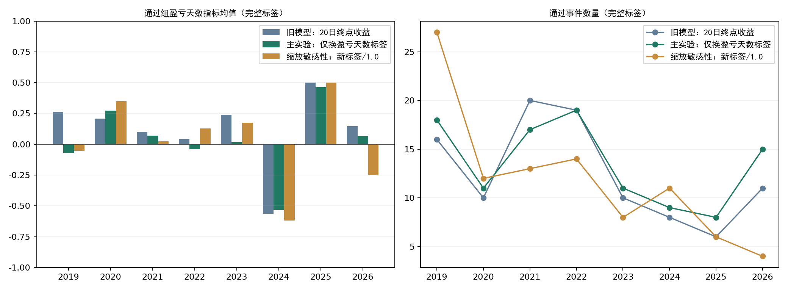
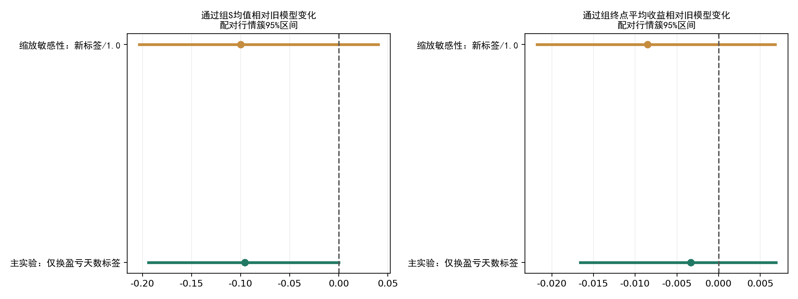

2026-10-21。研究实验，未替换正式模型。沿用原331个事件及13项特征，重做2019—2026年度训练；最终对同一256个年度预测事件比较，其中226个有完整20日标签。原数据工程和模型权重未改动。
主实验通过组S均值+0.020，旧模型为+0.116，差-0.0956；配对行情簇95%区间[-0.1942, -0.0001]。 这份报告只评价新旧模型，不根据结果改选股规则或下单。
本次可评价样本没有显示换标签带来改善：主实验通过组平均盈利天数下降，且通过组S均值低于自身拒绝组；预设缩放检查组也没有改善。主实验全样本的重采样差值区间上界非常接近0，剔除2026年的历史期区间仍跨0，不将其解释成稳定的显著劣势。新模型通过但缺标签的事件更多，必须保留缺失偏差。这也不构成旧模型已被证明有效的证据。
新标签S=(未来20日相对确认日收盘盈利天数−亏损天数)/20；第1—20个交易日，平价记0，范围[-1,1]。必须全路径有效且同一指数连续段；缺失不缩短窗口、不补零。原标签是20日终点收益，新标签衡量盈利持续性而不衡量盈亏幅度。
主实验只替换标签，target_scale保留0.1，即网络学习S/0.1，输出乘回0.1。另在训练前固定scale=1.0敏感性，网络直接学习S。SmoothL1损失、权重衰减和优化对标签尺度敏感，因此两组可能不同；不能把尺度差异伪装成纯标签收益。没有按测试结果选择上线版本。
两组都沿用原年度时间推进：最多此前8年、标签在年初前20交易日截止之前成熟；内层按日期末25%验证，同样隔离标签；仅历史内层选4/8规则、学习率0.003/0.01及早停轮数。3种子集成；同日事件降权、历史半衰期1095日。
每个新模型的门槛由该年度历史训练预测中位数确定，不能套用旧收益分数门槛0.003289。 新输出是S的回归评分，不是收益率或胜率；FNN不是有界输出层，本实验不事后截断预测。
| 期间 | 模型 | 完整事件 | 完整通过 | 通过但无标签 | 通过组S | 拒绝组S | 通过组盈利天数 | 通过组终点收益 | S>0精确率 | S>0召回率 |
|---|---|---|---|---|---|---|---|---|---|---|
| 2019–2026 | 旧模型：20日终点收益 | 226 | 100 | 5 | 0.116 | 0.05 | 11.16 | 1.13% | 59.00% | 50.00% |
| 2019–2026 | 主实验：仅换盈亏天数标签 | 226 | 108 | 22 | 0.02 | 0.133 | 10.2 | 0.80% | 50.93% | 46.61% |
| 2019–2026 | 缩放敏感性：新标签/1.0 | 226 | 95 | 9 | 0.016 | 0.125 | 10.16 | 0.28% | 49.47% | 39.83% |
| 2019–2025 | 旧模型：20日终点收益 | 210 | 89 | 5 | 0.112 | 0.065 | 11.12 | 0.35% | 59.55% | 48.18% |
| 2019–2025 | 主实验：仅换盈亏天数标签 | 210 | 93 | 21 | 0.013 | 0.143 | 10.13 | -0.25% | 50.54% | 42.73% |
| 2019–2025 | 缩放敏感性：新标签/1.0 | 210 | 91 | 8 | 0.027 | 0.129 | 10.27 | 0.15% | 50.55% | 41.82% |
| 2026 | 旧模型：20日终点收益 | 16 | 11 | 0 | 0.145 | -0.32 | 11.45 | 7.47% | 54.55% | 75.00% |
| 2026 | 主实验：仅换盈亏天数标签 | 16 | 15 | 1 | 0.067 | -1 | 10.67 | 7.27% | 53.33% | 100.00% |
| 2026 | 缩放敏感性：新标签/1.0 | 16 | 4 | 1 | -0.25 | 0.083 | 7.5 | 3.26% | 25.00% | 12.50% |
通过组终点收益是未扣费的自算板块指数观察。S>0精确率指通过事件中“盈利天数多于亏损天数”的比例；召回率仅针对本次形态事件池中S>0的事件。不能与上一份“终点收益>0”的分类指标混淆。

| 期间 | 模型 | 完整事件 | 完整通过 | 通过但无标签 | 通过组S | 拒绝组S | 通过组盈利天数 | 通过组终点收益 | S>0精确率 | S>0召回率 |
|---|---|---|---|---|---|---|---|---|---|---|
| 2019 | 旧模型：20日终点收益 | 59 | 16 | 0 | 0.263 | -0.035 | 12.62 | -2.16% | 62.50% | 37.04% |
| 2019 | 主实验：仅换盈亏天数标签 | 59 | 18 | 0 | -0.072 | 0.098 | 9.28 | -1.84% | 44.44% | 29.63% |
| 2019 | 缩放敏感性：新标签/1.0 | 59 | 27 | 0 | -0.052 | 0.128 | 9.48 | -2.18% | 37.04% | 37.04% |
| 2020 | 旧模型：20日终点收益 | 33 | 10 | 0 | 0.21 | 0.57 | 12.1 | 4.33% | 70.00% | 28.00% |
| 2020 | 主实验：仅换盈亏天数标签 | 33 | 11 | 0 | 0.273 | 0.555 | 12.73 | 3.01% | 72.73% | 32.00% |
| 2020 | 缩放敏感性：新标签/1.0 | 33 | 12 | 0 | 0.35 | 0.524 | 13.5 | 5.51% | 75.00% | 36.00% |
| 2021 | 旧模型：20日终点收益 | 30 | 20 | 0 | 0.1 | 0.27 | 11 | -0.16% | 60.00% | 66.67% |
| 2021 | 主实验：仅换盈亏天数标签 | 30 | 17 | 0 | 0.071 | 0.269 | 10.71 | 0.50% | 52.94% | 50.00% |
| 2021 | 缩放敏感性：新标签/1.0 | 30 | 13 | 0 | 0.023 | 0.259 | 10.23 | 0.55% | 53.85% | 38.89% |
| 2022 | 旧模型：20日终点收益 | 40 | 19 | 0 | 0.042 | -0.229 | 10.42 | 2.94% | 52.63% | 66.67% |
| 2022 | 主实验：仅换盈亏天数标签 | 40 | 19 | 0 | -0.042 | -0.152 | 9.58 | -0.01% | 36.84% | 46.67% |
| 2022 | 缩放敏感性：新标签/1.0 | 40 | 14 | 0 | 0.129 | -0.223 | 11.29 | 3.26% | 50.00% | 46.67% |
| 2023 | 旧模型：20日终点收益 | 22 | 10 | 0 | 0.24 | -0.142 | 12.4 | 0.12% | 70.00% | 53.85% |
| 2023 | 主实验：仅换盈亏天数标签 | 22 | 11 | 0 | 0.018 | 0.045 | 10.18 | -1.41% | 63.64% | 53.85% |
| 2023 | 缩放敏感性：新标签/1.0 | 22 | 8 | 0 | 0.175 | -0.05 | 11.75 | -0.38% | 75.00% | 46.15% |
| 2024 | 旧模型：20日终点收益 | 14 | 8 | 2 | -0.562 | -0.5 | 4.38 | -7.37% | 25.00% | 66.67% |
| 2024 | 主实验：仅换盈亏天数标签 | 14 | 9 | 2 | -0.533 | -0.54 | 4.67 | -5.03% | 22.22% | 66.67% |
| 2024 | 缩放敏感性：新标签/1.0 | 14 | 11 | 1 | -0.618 | -0.233 | 3.82 | -6.45% | 18.18% | 66.67% |
| 2025 | 旧模型：20日终点收益 | 12 | 6 | 3 | 0.5 | 0.517 | 15 | 4.56% | 83.33% | 55.56% |
| 2025 | 主实验：仅换盈亏天数标签 | 12 | 8 | 19 | 0.463 | 0.6 | 14.62 | 3.69% | 75.00% | 66.67% |
| 2025 | 缩放敏感性：新标签/1.0 | 12 | 6 | 7 | 0.5 | 0.517 | 15 | 4.56% | 83.33% | 55.56% |
| 2026 | 旧模型：20日终点收益 | 16 | 11 | 0 | 0.145 | -0.32 | 11.45 | 7.47% | 54.55% | 75.00% |
| 2026 | 主实验：仅换盈亏天数标签 | 16 | 15 | 1 | 0.067 | -1 | 10.67 | 7.27% | 53.33% | 100.00% |
| 2026 | 缩放敏感性：新标签/1.0 | 16 | 4 | 1 | -0.25 | 0.083 | 7.5 | 3.26% | 25.00% | 12.50% |
同一行情簇同时重采样新旧模型预测，区间保留同日板块及相近事件相关性。improvement为新模型通过组S均值减旧模型通过组S均值；gap为该模型通过组减拒绝组。各模型通过数量不相同，本实验未强行在测试集调门槛配平数量。
| period | variant | metric | estimate | low | high | clusters | replicates |
|---|---|---|---|---|---|---|---|
| 2019–2026 | 主实验：仅换盈亏天数标签 | gap | -0.1127 | -0.3772 | 0.097 | 20 | 2000 |
| 2019–2026 | 主实验：仅换盈亏天数标签 | improvement | -0.0956 | -0.1942 | -0.0001 | 20 | 2000 |
| 2019–2026 | 缩放敏感性：新标签/1.0 | gap | -0.1094 | -0.4036 | 0.1525 | 20 | 2000 |
| 2019–2026 | 缩放敏感性：新标签/1.0 | improvement | -0.1002 | -0.2036 | 0.0403 | 20 | 2000 |
| 2019–2025 | 主实验：仅换盈亏天数标签 | gap | -0.1298 | -0.3998 | 0.0934 | 19 | 2000 |
| 2019–2025 | 主实验：仅换盈亏天数标签 | improvement | -0.0995 | -0.2062 | 0.0128 | 19 | 2000 |
| 2019–2025 | 缩放敏感性：新标签/1.0 | gap | -0.1019 | -0.4029 | 0.178 | 19 | 2000 |
| 2019–2025 | 缩放敏感性：新标签/1.0 | improvement | -0.0849 | -0.1927 | 0.058 | 19 | 2000 |

| variant | status | events | complete | mean_s | mean_terminal |
|---|---|---|---|---|---|
| bounded_scale_1 | 新增通过 | 37 | 31 | -0.1742 | -0.008 |
| bounded_scale_1 | 转为拒绝 | 38 | 36 | 0.1306 | 0.0172 |
| bounded_scale_1 | 都拒绝 | 114 | 95 | 0.1232 | 0.0091 |
| bounded_scale_1 | 都通过 | 67 | 64 | 0.1078 | 0.008 |
| label_only_scale_0p1 | 新增通过 | 57 | 40 | -0.125 | -0.0027 |
| label_only_scale_0p1 | 转为拒绝 | 32 | 32 | 0.1375 | 0.005 |
| label_only_scale_0p1 | 都拒绝 | 94 | 86 | 0.1314 | 0.0084 |
| label_only_scale_0p1 | 都通过 | 73 | 68 | 0.1059 | 0.0143 |
| variant | sector | date | score | threshold | selected | diagnostic_only |
|---|---|---|---|---|---|---|
| 旧模型：20日终点收益 | 养殖业 | 2026-10-20 | -0.042315 | 0.003289 | False | True |
| 旧模型：20日终点收益 | 酒店餐饮（原首次事件） | 2026-09-17 | -0.009877 | 0.003289 | False | True |
| 主实验：仅换盈亏天数标签 | 养殖业 | 2026-10-20 | -0.051037 | 0.066053 | False | True |
| 主实验：仅换盈亏天数标签 | 酒店餐饮（原首次事件） | 2026-09-17 | 0.109464 | 0.066053 | True | True |
| 缩放敏感性：新标签/1.0 | 养殖业 | 2026-10-20 | -0.272051 | 0.088405 | False | True |
| 缩放敏感性：新标签/1.0 | 酒店餐饮（原首次事件） | 2026-09-17 | 0.584311 | 0.088405 | True | True |
酒店餐饮行对应9月17日首次事件，不是今天新买点；养殖业行对应10月20日首次确认。二者完整20日标签均尚未成熟，新评分没有利用它们未来走势。上述仅为研究模型诊断，不改变原扫描结果。
| variant | year | train | fit | validation | rules | learning_rate | epochs | threshold | last_label | target_scale |
|---|---|---|---|---|---|---|---|---|---|---|
| 主实验：仅换盈亏天数标签 | 2019 | 61 | 49 | 9 | 8 | 0.01 | 775 | 0.14589 | 2018-11-12 00:00:00 | 0.1 |
| 主实验：仅换盈亏天数标签 | 2020 | 120 | 62 | 57 | 4 | 0.003 | 190 | -0.019528 | 2019-11-29 00:00:00 | 0.1 |
| 主实验：仅换盈亏天数标签 | 2021 | 154 | 62 | 37 | 8 | 0.003 | 190 | 0.071283 | 2020-12-01 00:00:00 | 0.1 |
| 主实验：仅换盈亏天数标签 | 2022 | 184 | 154 | 30 | 4 | 0.003 | 100 | 0.099737 | 2021-11-30 00:00:00 | 0.1 |
| 主实验：仅换盈亏天数标签 | 2023 | 222 | 166 | 53 | 8 | 0.003 | 100 | 0.0535 | 2022-11-30 00:00:00 | 0.1 |
| 主实验：仅换盈亏天数标签 | 2024 | 239 | 181 | 53 | 4 | 0.003 | 100 | 0.064319 | 2023-10-31 00:00:00 | 0.1 |
| 主实验：仅换盈亏天数标签 | 2025 | 223 | 155 | 40 | 8 | 0.003 | 100 | 0.040168 | 2024-08-07 00:00:00 | 0.1 |
| 主实验：仅换盈亏天数标签 | 2026 | 220 | 175 | 37 | 8 | 0.003 | 100 | 0.066053 | 2025-11-18 00:00:00 | 0.1 |
| 缩放敏感性：新标签/1.0 | 2019 | 61 | 49 | 9 | 8 | 0.003 | 655 | 0.170446 | 2018-11-12 00:00:00 | 1 |
| 缩放敏感性：新标签/1.0 | 2020 | 120 | 62 | 57 | 4 | 0.003 | 100 | 0.00656 | 2019-11-29 00:00:00 | 1 |
| 缩放敏感性：新标签/1.0 | 2021 | 154 | 62 | 37 | 8 | 0.003 | 100 | 0.098995 | 2020-12-01 00:00:00 | 1 |
| 缩放敏感性：新标签/1.0 | 2022 | 184 | 154 | 30 | 8 | 0.003 | 100 | 0.092608 | 2021-11-30 00:00:00 | 1 |
| 缩放敏感性：新标签/1.0 | 2023 | 222 | 166 | 53 | 8 | 0.003 | 150 | 0.060978 | 2022-11-30 00:00:00 | 1 |
| 缩放敏感性：新标签/1.0 | 2024 | 239 | 181 | 53 | 4 | 0.003 | 100 | 0.070865 | 2023-10-31 00:00:00 | 1 |
| 缩放敏感性：新标签/1.0 | 2025 | 223 | 155 | 40 | 8 | 0.003 | 100 | -0.00387 | 2024-08-07 00:00:00 | 1 |
| 缩放敏感性：新标签/1.0 | 2026 | 220 | 175 | 37 | 4 | 0.01 | 120 | 0.088405 | 2025-11-18 00:00:00 | 1 |
所有年度新旧训练/拟合/验证事件ID完全一致。2026模型训练最晚标签仍为2025-11-18；文件实际于2026-10-21训练，不能称当年初真实存在。
原256条预测有30条无完整评价标签，其中29条路径缺失或连续段中断、1条9月17日酒店餐饮未成熟。2025年37条中25条无法评价；结果不代表完整全年。通过但无标签数量已列入表，不删除候选数。按未知S取[-1,1]得到各组全样本均值数学边界：
| variant | group | events | unknown | low | high |
|---|---|---|---|---|---|
| bounded_scale_1 | 通过 | 104 | 9 | -0.0721 | 0.101 |
| bounded_scale_1 | 拒绝 | 152 | 21 | -0.0303 | 0.2461 |
| label_only_scale_0p1 | 通过 | 130 | 22 | -0.1523 | 0.1862 |
| label_only_scale_0p1 | 拒绝 | 126 | 8 | 0.0611 | 0.1881 |
| original_return | 通过 | 105 | 5 | 0.0629 | 0.1581 |
| original_return | 拒绝 | 151 | 25 | -0.1238 | 0.2073 |
本次是在查看旧模型表现之后改变目标的研究，使用今天的历史供应商数据，存在开发与历史版本偏差；即使某组改善，也不是全新前瞻检验。2026仅16个成熟事件。盈利持续性不限制最大亏损或终点损失，必须与收益幅度并看。
个股模型没有重训。新板块模型会改变个股模型历史训练事件分布，不能直接组合后声称全流程已验证。本次不改正式策略配置、生产扫描或数据构建代码。
逐事件新旧比较 · 入选变化 · 逐年指标 · 近期事件评分 · 配对区间
OPENBLAS_NUM_THREADS=1 OMP_NUM_THREADS=1 MKL_NUM_THREADS=1 python alpha_lab/experiments/sector_profit_days_v1/train.py
OPENBLAS_NUM_THREADS=1 OMP_NUM_THREADS=1 python alpha_lab/experiments/sector_profit_days_v1/report.py